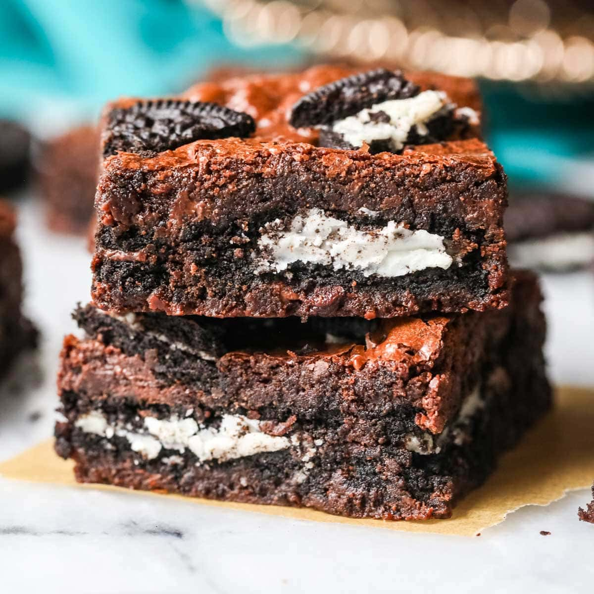

Oreo Brownies

Description
These fudgy chocolatey brownies are filled with and covered in pieces of oreo cookies.
They are a decadent and moreish dessert, just try not to eat the entire pan!
Ingredients
- 95 grams unsalted butter
- 100 grams dark chocolate
- 2 eggs
- 137 grams caster sugar
- 45 grams plain flour
- 18 grams cocoa
- 1 teaspoon vanilla extract
- 100 grams milk chocolate chips
- 150 grams oreo cookies
Method
- Pre-heat your oven to 160℃ (for fan assisted) and line a 7 inch square baking tin.
- Melt the dark chocolate and butter in a heat proof bowl over a pan of boiling water.
You can do this in the microwave but I find it less predictable!
- Leave the chocolate to cool whilst then mixing the room temperature eggs with your sugar.
It should take several minutes for the mixture to double in size and be full of bubbles.
- Pour the melted chocolate gently into the egg/sugar mix be careful not to knock the air out of the mixture.
Using a spatula gently mix the chocolate into the egg/sugar combination.
This will take several minutes but take it slow and steady.
- When fully mixed sift in the cocoa and plain flour and vanilla. Again gently combine this into the mix fully.
- Take 90g of your oreos which should be broken into quarters and mix this along with the chocolate chips gently into the mix.
- Once this is all fully combined pour into the mixture into the prepared tin.
- Add the remaining oreo bits to the top of your mix and then bake in the oven for 25minutes.
- Remove from the oven and allow to cool completely.
- Tuck in and enjoy!